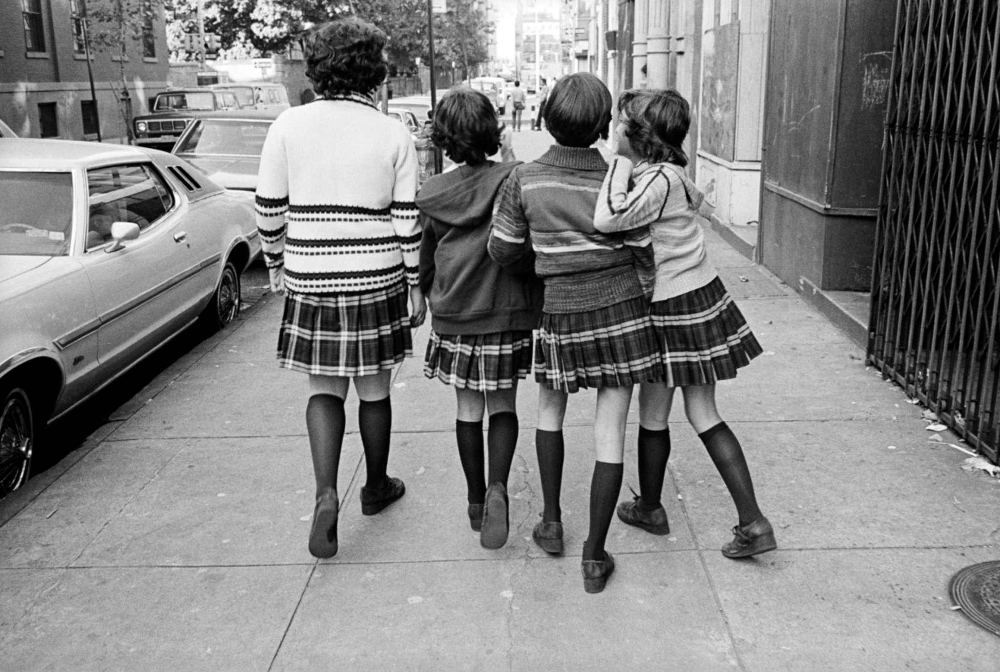
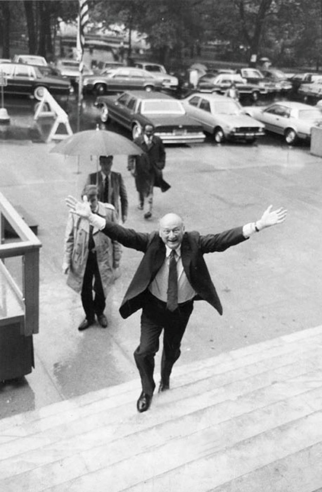

Pic I took on my first visit to New York in January 1983
Pic I took on my first visit to New York in January 1983

Chock full o’ Nuts, 34th and 7th, 1979

QB Train in action, 1973

Movies in the Bronx in 1972

Vogue, 1960s
86th and Broadway, looking northeast, 1957

Bergdorf, 1979

Well-meaning idiots in 1978

59th Street on the Lex Ave line, 1981

A young woman taking in the scale model for the newly planned World Trade Center. Late 1960s.

8th Ave and 43rd St, 1985

70s Style
Susan Meiselas Carol, JoJo and Lisa Hanging Out, Mott Street, Little Italy, New York City 1976

Susan Meiselas Roe, JoJo, Dee and Lisa Walking Home from St. Patrick’s School. Little Italy, New York City 1976

The worst undercover cop in the world, selling tokens and trying to get robbed. 1970s sting operation.
Cheap-ass clothes and shit, on 14th Street
Looking down 5th Ave, from 20th Street, 1983

Mulberry Street, 1982

Fantastic Five at the Grand Concourse and the Cross Bronx Expressway, in 1981.
Dondi

1980s subway
Cheapest parking lot in NYC

Spring & Mulberry, 1976
Peter Stuyvesant, lording his peg leg over a common bicycle rider, 1983

West Broadway, 1985

The view from Brooklyn, 1983

Dude might not have style, but he’s got a lot of shoes.
Madison Ave, midtown, 1969

3rd Ave and 25th Street, 1981

57th and 5th, 1982
Smug fuckin’ yuppie

About to hug?

East Village block party getting set up, 1980

AOL, #1!
Mare 139 and Lady Pink in a heavily tagged High School of Art & Design bathroom, 1981.

Simpson Street in the Bronx. Joe Camel teaching America’s youth that smoking is cool

Ed Koch loves you

Kitten on the subway
Looking south down Broadway, between 84th and 83rd, 1969

Fox Street in the Bronx, 1983

Li'l Rodney Cee, Jazzy Jeff of Funky Four Plus One and friends in the Bronx, 1981.
Thanksgiving Day Parade, 1988 via Magnum Photos
Snoopy knows what you’re doing…
Hallo,...nice EndtoEnds...i like thst early NYC Graff and Subway Pics etc....i am from West Germany ...growing up in the 80th with Breakdance and Grafitti...,follow your Blog singen a few Weeks...thanx for your Work and Time that you invest to keep the Funk n Soul and the good ol Days alive. Wer you also a Grafitti Painter/ Tagger in the Past?
Many Greetings
Thanks! Yeah, I was a tagger.
Oh yeah.

You lookin’ at me?

Canal Jeans and Pearl Paint, 1977. Where you got your graffiti supplies and cheap ass clothes.